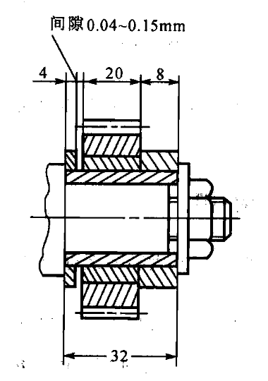

尺寸链
尺寸链：在机器的装配或零件的设计、加工过程中，由相互连接的尺寸形成封闭的尺寸组，称为尺寸链。
环：尺寸链中，列入尺寸链的每一个尺寸称为环。
封闭环：尺寸链中，在装配过程中形成的一环称为封闭环。
组成环：尺寸链中，对封闭环有影响的全部环，称为组成环。
增环：尺寸链中，某组成环的变动引起封闭环同向变动，则称该环为增环。
减环：尺寸链中，某组成环的变动引起封闭环反向变动，则称该环为减环。
补偿环：尺寸链中预先选定某一组成环，可以通过改变其大小或位置，使封闭环达到规定的要求，则称该环为补偿环。
尺寸链图的绘制：
|  | |